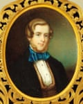
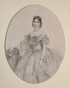

A stunning silver sculpture inspired by the defiant love between a Victorian aristocrat and a former circus performer has been rediscovered after decades during which it was thought to have been lost or melted down.
The work, crafted by royal goldsmiths and depicting two rutting stags, had a sensational reception when it was seen by millions at exhibitions in London and Paris in the 1860s. It featured in the pages of the Illustrated London News.
George Harry Grey, the 7th earl of Stamford, commissioned the piece in 1855 after “locking horns” with high society, the National Trust said, by marrying Catherine Cox, who had earned a living as a bareback rider.
Portrait miniature of George Harry Grey.Photograph: Rachel Conroy/National Trust
Before meeting and falling in love with Grey, Cox had performed with two sisters, described in one account as “the raven-ringletted beauties”, at Astley’s circus . Their act culminated in leaping through hoops of fire.
Grey had inherited his title, four huge estates, a house in London and an annual income of £90,000 from his grandfather in 1845.
None of Grey’s family attended the couple’s wedding ceremony, according to the marriage certificate. Queen Victoria refused to sit in an adjoining box at the opera, and at the Knutsford races in 1855 they were greeted by turned backs and raised parasols. Some people even hissed the word “strumpet”, according to some accounts.
Catherine Cox, Countess of Stamford.Photograph: Robert Thrift/National Trust
“Ostracised and humiliated, the earl and countess finally had enough and left Dunham Massey [their Cheshire residence] – but not quietly,” said James Rothwell, curator for decorative arts at the National Trust, which now owns the stately home.
“They took the family treasures with them to their other houses including Bradgate, the ancient family seat in Leicestershire, where they were welcomed, in total contrast to what had happened to them back in Cheshire. It was Bradgate that inspired the earl to commission one of the most extraordinary silver sculptures of the 19th century.”
The work, which goes on display at Dunham Massey on Thursday, was commissioned as a “symbol of rebellion and love” and as a “defiant gesture to the society that shunned” Grey, the trust said. The rutting red deer stags represented the earl locking horns with Victorian high society.

Detail of Stags in Bradgate Park.Photograph: James Dobson/National Trust
Emma Campagnaro, a property curator at Dunham Massey, said: “Anyone who has ever fallen in love with someone others didn’t approve of – whether it was your parents, your friends or society itself – will feel something when they hear this story.
“This piece of silver is a monument to love that refused to conform, and to the power of art to speak when words fail. It speaks of nature, of craftsmanship, and of a couple who chose each other over status and what others thought of them.”
The stags sculpture was recognised in a private collection by A Pash & Sons, a London-based specialist dealer in silverware, and was acquired by the National Trust. It has been reunited with other world-renowned silverware that has been returned to the property.